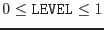
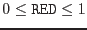
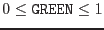
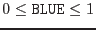

It is also possible to provide an external color tables in the form of a data set. The set needs to consist of a table named COLORTABLE with the following four scalar columns:
| name | type | allowed range | remark |
| LEVEL | E (real32) |  | the scalar value |
| RED | E (real32) |  | red component |
| GREEN | E (real32) |  | green component |
| BLUE | E (real32) |  | the blue component |
Each rows defines a discrete point in the R/G/B color space that is to be associated with the scalar value LEVEL. The table can also be regarded as defining three separate curves for the three basic colors red, green, and blue and piecewise linear interpolation is carried out for intermediate LEVEL values.
As an example, here is the contents of the color table heat:
| LEVEL | RED | GREEN | BLUE |
| 0.00 | 0.0 | 0.00 | 0 |
| 0.34 | 1.0 | 0.34 | 0 |
| 0.65 | 1.0 | 0.65 | 0 |
| 0.98 | 1.0 | 0.98 | 0 |
| 1.00 | 1.0 | 1.00 | 0 |
The table can be generated from scratch with e.g. fv.